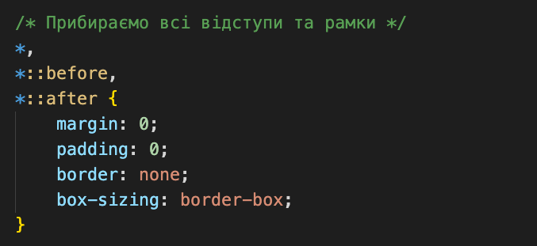
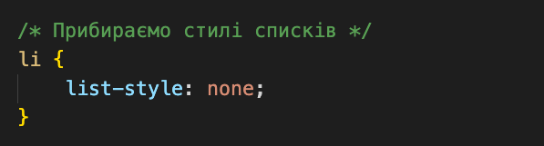
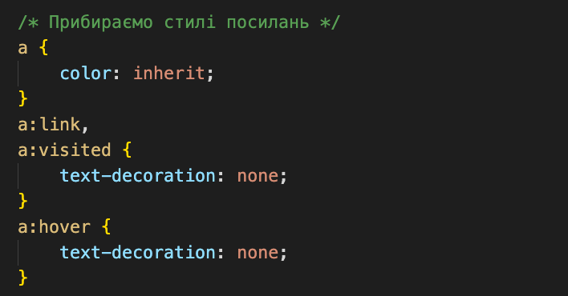
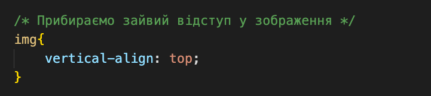
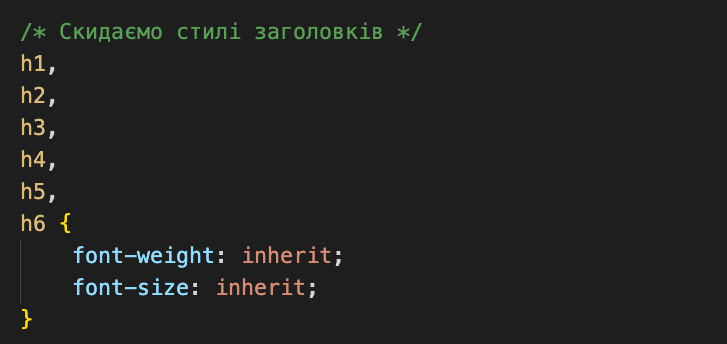
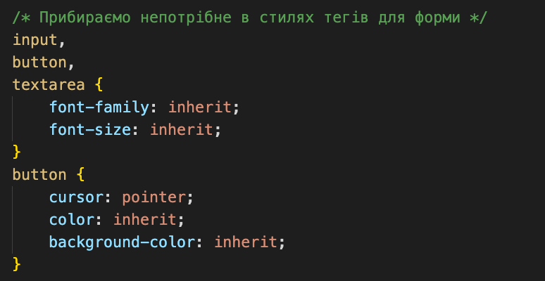
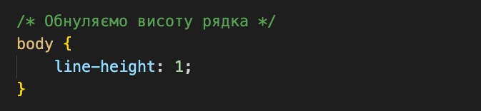
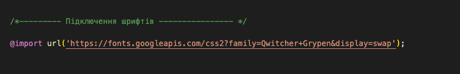
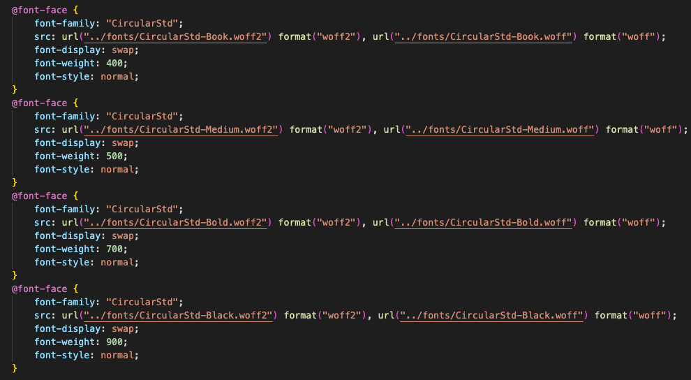

Каскадність CSS – це механізм, завдяки якому до елементу HTML-документа може застосовуватися більш ніж одне правило CSS. Правила можуть виходити з різних джерел: із зовнішньої та внутрішньої таблиці стилів, від механізму успадкування, від батьківських елементів, від класів та ID, від селектора тегу, від атрибуту style тощо. Оскільки в цих випадках часто відбувається конфлікт стилів, була створена система пріоритетів: зрештою застосовується той стиль, який походить від джерела з вищим пріоритетом.
CSS: ПРІОРИТЕТ СЕЛЕКТОРІВ, ОБНУЛЕННЯ СТИЛІВ. ШРИФТИ: ПІДКЛЮЧЕННЯ
Конспект уроку №4 курсу "Фрілансер по життю"
ПРІОРИТЕТ СЕЛЕКТОРІВ
CSS is designed to enable the separation of presentation and content, including layout, colors, and fonts.This separation can improve content accessibility; provide more flexibility and control in the specification of presentation characteristics; enable multiple web pages to share formatting by specifying the relevant CSS in a separate .css file, which reduces complexity and repetition in the structural content; and enable the .css file to be cached to improve the page load speed between the pages that share the file and its formatting.
Основні правила формування пріоритетів:
- 1 - У випадку рівнозначних селекторів більший пріоритет буде у останнього по коду.
- 2 - Більший пріоритет завжди буде у селектора, який звужує (уточнює, конкретизує) пошук (запит).
- 3 - Пріоритет у рядкових (inline) стилів (атрибут style="") вищий ніж у стилів з окремого файлу (наприклад style.css).
- 4 - Позначка !important перезаписує пріоритет (не рекомендується).
ОБНУЛЕННЯ СТИЛІВ
Кожен браузер встановлює свої значення стилів за замовчуванням для різних HTML-елементів, нам їх і треба скинути, щоб сайти відображалися однаково у всіх браузерах.
Для цього, під час створення нового проекту додаємо у нього спеціальний файл "reset.css", який здійснює повне обнулення CSS стилів і дозволяє нам творити з «чистого листа».
Отже, застосуємо наступні стилі для обнулення (поділимо їх на категорії з невеликими поясненнями):
Прибираємо всі відступи та рамки:

Прибираємо стилі списків:

Прибираємо стилі посилань:

Прибираємо зайвий відступ у зображення:

Скидаємо стилі заголовків:

Прибираємо непотрібне в стилях тегів для форми:

Обнуляємо висоту рядка:

ПІДКЛЮЧЕННЯ ШРИФТІВ
Сімейство шрифтів - це шрифт, який застосовується до тексту. Кожен шрифт являє собою набір гліфів, кожен з яких являє собою окремий лист, номер, знак пунктуації або інший символ. Кожен шрифт має певну жирність, стиль, ширину, нахил.
Хоча терміни "шрифт" і "сімейство шрифтів" мають дещо інше значення ("шрифт" більш точний, ніж "сімейство шрифтів"), вони часто використовуються разом в колах веб-дизайну і є рівнозначними один-одному.
Більшість комп'ютерів мають вже попередньо встановлені з шрифти, однак, не треба очікувати, що комп'ютер користувача матиме всі потрібні Вам шрифти. Саме тому нам потрібно підключати шрифти, які використані у дизайні сайту. В ідеалі - дизайнер має сам додавати файли шрифтів. Але це буває не завжди, тому ми будемо підключати їх самостійно.
GOOGLE FONTS
Для того, щоб підключити шрифт за допомогою сервісу Google Fonts, робимо наступні кроки:
- - Заходимо на посилання https://fonts.google.com/ та шукаємо потрібний нам стиль, скориставшись формою пошуку "Search fonts".
- - Беремо (накидуємо) ті варіанти, які нам потрібні.
- - Потім вибираємо варіант підключення, який нам потрібен. А саме, їх існує 2:
- 1 - за допомогою тегу ‹link› (підключаємо його перед основними стилями в html файлі)
- 2 - за допомогою @import в css файлі (додаємо на початок в основному файлі стилів)
Приклад підключення шрифту в css файлі:

САМОСТІЙНИЙ ПОШУК ТА ПІДКЛЮЧЕННЯ ШРИФТУ
Якщо на сервісі Google Fonts ми не знаходимо потрібний нам шрифт, тоді ми шукаємо його самостійно в Google.
- - Шукаємо всі потрібні нам варіанти шрифту АБО у форматах "woff" та "woff2" АБО тільки у форматі "ttf".
- - Зберігаємо всі файли у папці "fonts".
- - Якщо вдалося знайти лише у форматі "ttf", то конвертуємо його у файли "woff" та "woff2" за допомогою сервісу https://transfonter.org/. Робимо це тому, що файли "woff" та "woff2" важать менше, ніж файл "ttf".
- - Підключаємо всі наші файли шрифтів в файлі основних стилів (на початку) в наступному вигляді (приклад):
